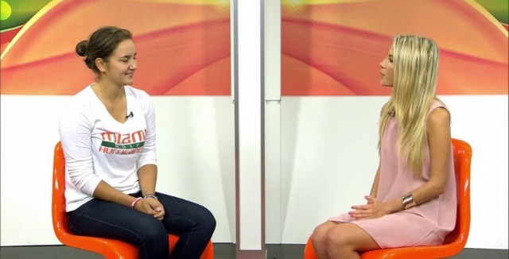

About Me
Hello, my name is Emily Markus! I was that little girl that spent her childhood in the bleachers, watching my older brother’s sporting events. It was from then on that my love for sports began. I took up soccer and basketball, but much to my dismay, I didn’t have the talent to see it as a career. I knew in my heart that I did not want to leave the sports atmosphere. My passion and love for the game is the driving force behind my determination in continuing my career in the sports industry upon graduation. Throughout my four years, I have participated in UMTV, including holding on-air roles for SportsDesk, the university's emmy award-winning sports channel. I have had the opportunity to interview college and professional athletes, as well as cover sporting events (NBA, NFL, MLB, WTT, Miami Open, etc.) and file articles at the final buzzer. My experience on-air and in the studio has allowed me to also take my talents to the field by filming on the sidelines for numerous sporting events. I have been featured on ESPN/ESPNU, and have assisted ESPN during interviews for Monday Night Football. My passion for sports has shaped my desire to work towards a job in sports broadcasting.